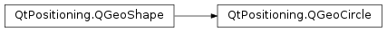

QGeoCircle¶
Synopsis¶
Functions¶
- def
__eq__(other) - def
__ne__(other) - def
extendCircle(coordinate) - def
radius() - def
setCenter(center) - def
setRadius(radius) - def
translate(degreesLatitude, degreesLongitude) - def
translated(degreesLatitude, degreesLongitude)
Detailed Description¶
The
PySide2.QtPositioning.QGeoCircleclass defines a circular geographic area.The circle is defined in terms of a
PySide2.QtPositioning.QGeoCoordinatewhich specifies the center of the circle and a qreal which specifies the radius of the circle in meters.The circle is considered invalid if the center coordinate is invalid or if the radius is less than zero.
This class is a
Q_GADGET()since Qt 5.5. It can be directly used from C++ and QML .
-
class
PySide2.QtPositioning.QGeoCircle¶ -
class
PySide2.QtPositioning.QGeoCircle(other) -
class
PySide2.QtPositioning.QGeoCircle(center[, radius=-1.0]) -
class
PySide2.QtPositioning.QGeoCircle(other) Parameters: - center –
PySide2.QtPositioning.QGeoCoordinate - other –
PySide2.QtPositioning.QGeoCircle - radius –
PySide2.QtCore.qreal
Constructs a new, invalid geo circle.
Constructs a new geo circle from the contents of
other.Constructs a new geo circle centered at
centerand with a radius ofradiusmeters.Constructs a new geo circle from the contents of
other.- center –
-
PySide2.QtPositioning.QGeoCircle.extendCircle(coordinate)¶ Parameters: coordinate – PySide2.QtPositioning.QGeoCoordinateExtends the geo circle to also cover the coordinate
coordinate
-
PySide2.QtPositioning.QGeoCircle.__ne__(other)¶ Parameters: other – PySide2.QtPositioning.QGeoCircleReturn type: PySide2.QtCore.boolReturns whether this geo circle is not equal to
other.
-
PySide2.QtPositioning.QGeoCircle.__eq__(other)¶ Parameters: other – PySide2.QtPositioning.QGeoCircleReturn type: PySide2.QtCore.boolReturns whether this geo circle is equal to
other.
-
PySide2.QtPositioning.QGeoCircle.radius()¶ Return type: PySide2.QtCore.qrealReturns the radius in meters of this geo circle.
-
PySide2.QtPositioning.QGeoCircle.setCenter(center)¶ Parameters: center – PySide2.QtPositioning.QGeoCoordinateSets the center coordinate of this geo circle to
center.See also
PySide2.QtPositioning.QGeoCircle.center()
-
PySide2.QtPositioning.QGeoCircle.setRadius(radius)¶ Parameters: radius – PySide2.QtCore.qrealSets the radius in meters of this geo circle to
radius.
-
PySide2.QtPositioning.QGeoCircle.translate(degreesLatitude, degreesLongitude)¶ Parameters: - degreesLatitude –
PySide2.QtCore.double - degreesLongitude –
PySide2.QtCore.double
Translates this geo circle by
degreesLatitudenorthwards anddegreesLongitudeeastwards.Negative values of
degreesLatitudeanddegreesLongitudecorrespond to southward and westward translation respectively.- degreesLatitude –
-
PySide2.QtPositioning.QGeoCircle.translated(degreesLatitude, degreesLongitude)¶ Parameters: - degreesLatitude –
PySide2.QtCore.double - degreesLongitude –
PySide2.QtCore.double
Return type: Returns a copy of this geo circle translated by
degreesLatitudenorthwards anddegreesLongitudeeastwards.Negative values of
degreesLatitudeanddegreesLongitudecorrespond to southward and westward translation respectively.- degreesLatitude –
© 2018 The Qt Company Ltd. Documentation contributions included herein are the copyrights of their respective owners. The documentation provided herein is licensed under the terms of the GNU Free Documentation License version 1.3 as published by the Free Software Foundation. Qt and respective logos are trademarks of The Qt Company Ltd. in Finland and/or other countries worldwide. All other trademarks are property of their respective owners.